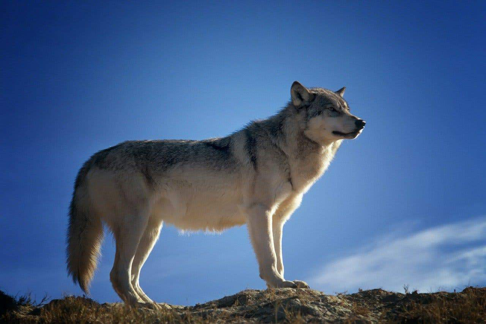

Albany
Alpha Wolf
“Alpha” implies competing with others and becoming top dog by winning a contest or battle. However, most wolves who lead packs achieved their position simply by mating and producing pups, which then became their pack.
Fun Facts
- One of the least known wolf facts is that wolf pups are born with blue eyes.
- the largest species in the dog or canid family
- There are two species of wolf, the grey wolf which is found throughout the northern hemisphere, and the red wolf, which is limited to a tiny population in the state of North Carolina.
